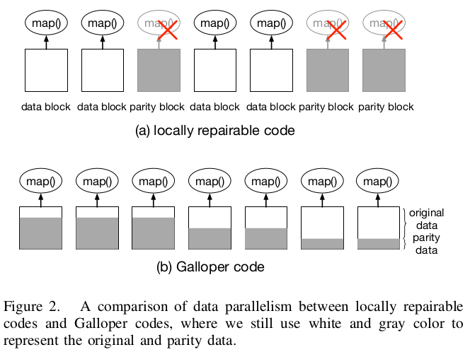
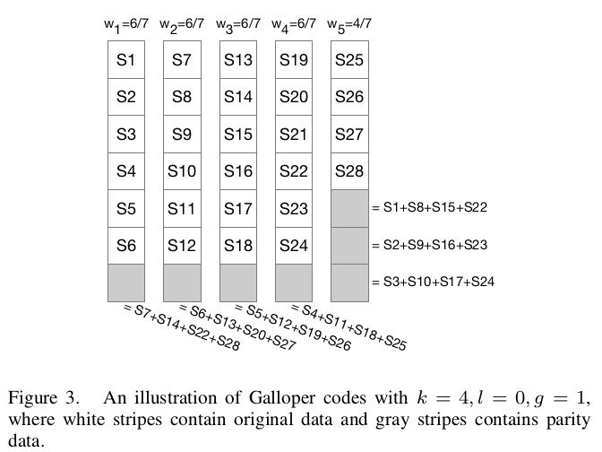

Motivation of this paper: The existing designs of locally repairable codes suffer from lilited data parallelism, since original data can only be read from specific servers. In this paper, it proposes a novel family of locally repairable codes that can achieve low disk I/O during reconstrcution and meanwhile extend data parallelism from specific servers to all servers.
Galloper codes
The Galloper codes focus on the low disk I/O during reconstruction and high data parallelism at the same time.
Main Challenge: how to spread the parity block and maintain the original properites of Pyramid codes in terms of locality and failure tolerance.

Galloper codes use the symbol remapping to achieve the "moving" the original data from the data blocks to all blocks. To this end, each block will need to contain both original data and parity data.
Given a Galloper code, there will be blocks in total, including data blocks, local parity blocks, and global parity blocks. Among the total blocks, it also allows to associate each block with a weight that corresponds to the performance of its server. (e.g., the throughput of sequential disk read)

Compared with a Reed-Solomon code, this Galloper code achieves the same failure tolerance, i.e., all original data can be decoded from any four blocks.
The idea to convert the Reed-Solomon code into a Galloper code is to find another set of stripes as a new basis.
Weight Assignment
If the performance of a server is too much higher than the rest of the servers. It should "limit" the performance of that server. Then, it can determine the actual performance of each server by solving the following linear programming problem.
Implementation and EvaluationImplementation:
use Intel's storage acceleration library (ISA-L) to implement the finite field operations
also implement a prototype on Apache Hadoop
Evaluation
comparing with Reed-Solomon codes and Pytamid codes
performance of Encoding, Decoding, and Reconstruction
performance of Running Hadoop Jobs
Galloper codes achieve similar performance during most coding operations as existing Pyamid codes, but significantly improve the performance of running data analytical jobs on the coded data, on both homogeneous and heterogeneous servers.
Strength (Contributions of the paper)
This paper proposes Galloper codes, a novel family of locally repairable codes, that achieve low disk I/O during reconstruction and meanwhile extend data parallelism from specific servers to all servers.
Galloper codes can arbitrarily determine the amount of original data placed on all servers, based on the performance of the coresponding server.
It also develops a prototype with Apache Hadoop.
Weakness (Limitations of the paper)
the construction of Galloper code needs to choose a larger stripes set as the a basis, which can impose a high overhead of construction.
Future Works
How to reduce the overhead of the construction in Galloper code can be the future work.